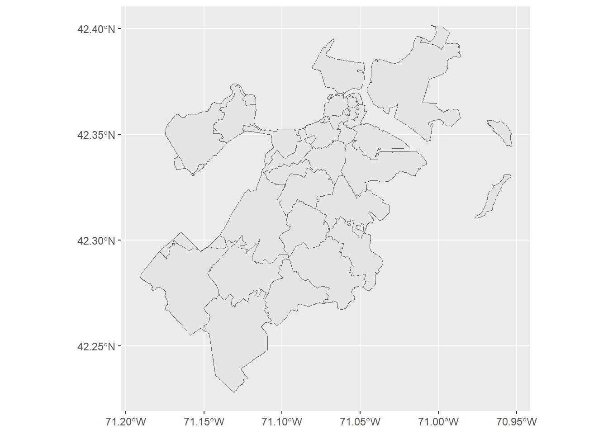
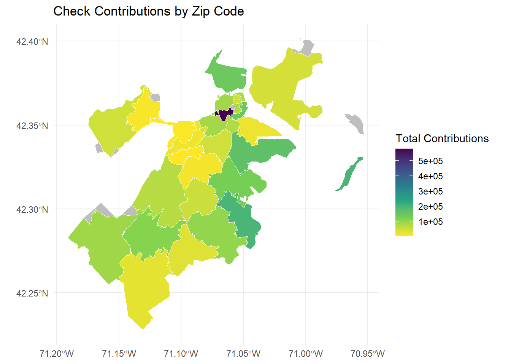
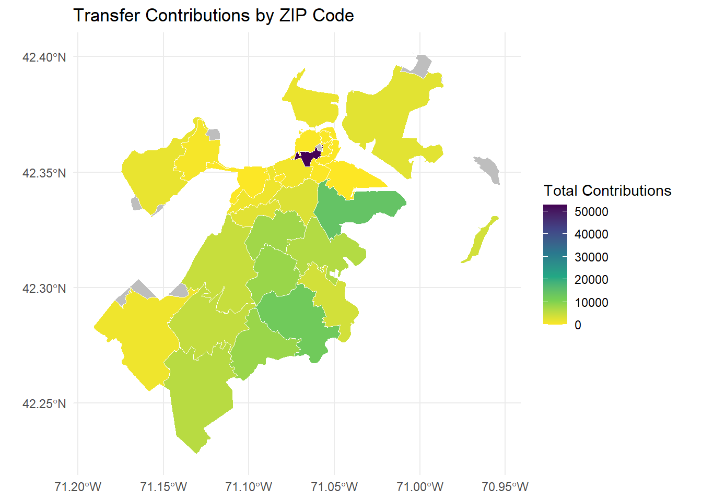

Warning: package 'ggplot2' was built under R version 4.4.3
── Attaching core tidyverse packages ──────────────────────── tidyverse 2.0.0 ──
✔ dplyr 1.1.4 ✔ readr 2.1.5
✔ forcats 1.0.0 ✔ stringr 1.5.1
✔ ggplot2 4.0.3 ✔ tibble 3.2.1
✔ lubridate 1.9.4 ✔ tidyr 1.3.1
✔ purrr 1.0.2
── Conflicts ────────────────────────────────────────── tidyverse_conflicts() ──
✖ dplyr::filter() masks stats::filter()
✖ dplyr::lag() masks stats::lag()
ℹ Use the conflicted package (<http://conflicted.r-lib.org/>) to force all conflicts to become errors
library(ggplot2)library(plotly)
Warning: package 'plotly' was built under R version 4.4.3
Attaching package: 'plotly'
The following object is masked from 'package:ggplot2':
last_plot
The following object is masked from 'package:stats':
filter
The following object is masked from 'package:graphics':
layout
library(magrittr)
Attaching package: 'magrittr'
The following object is masked from 'package:purrr':
set_names
The following object is masked from 'package:tidyr':
extract
library(rio)
Warning: package 'rio' was built under R version 4.4.3
Attaching package: 'rio'
The following object is masked from 'package:plotly':
export
library(sf)
Warning: package 'sf' was built under R version 4.4.3
Linking to GEOS 3.13.0, GDAL 3.10.1, PROJ 9.5.1; sf_use_s2() is TRUE
library(readxl)library(tidytext)
Warning: package 'tidytext' was built under R version 4.4.3
library(ggwordcloud)
Warning: package 'ggwordcloud' was built under R version 4.4.3
library(igraph)
Warning: package 'igraph' was built under R version 4.4.3
Attaching package: 'igraph'
The following object is masked from 'package:plotly':
groups
The following objects are masked from 'package:lubridate':
%--%, union
The following objects are masked from 'package:dplyr':
as_data_frame, groups, union
The following objects are masked from 'package:purrr':
compose, simplify
The following object is masked from 'package:tidyr':
crossing
The following object is masked from 'package:tibble':
as_data_frame
The following objects are masked from 'package:stats':
decompose, spectrum
The following object is masked from 'package:base':
union
library(ggraph)
Warning: package 'ggraph' was built under R version 4.4.3
Date Contributor
1 1/2/2024 Bradley, Garrett
2 1/2/2024 Eisenstadt, Joseph
3 1/2/2024 Faustin, Kurt
4 1/2/2024 Lynch, Patricia
5 1/2/2024 Miller, Thomas
6 1/2/2024 Professional Fire Fighters of MA Political Action Committee
Address Addressfull City
1 234 Causeway St #709 234 Causeway St #709 Boston MA 02108 Boston
2 2 Center Plaza Ste. 620 2 Center Plaza Ste. 620 Boston MA 02108 Boston
3 126 Border St. Unit 515 126 Border St. Unit 515 Boston MA 02108 Boston
4 18 Tremont Street 18 Tremont Street Boston MA 02108 Boston
5 28 State Street, Suite 802 28 State Street, Suite 802 Boston MA 02108 Boston
6 Two Center Plaza Suite 4M Two Center Plaza Suite 4M Boston MA 02108 Boston
State Zip Occupation Amount Recipient Tender Type Description
1 MA 02108 attorney 1000 Dolan, Mara Credit Card
2 MA 02108 Attorney 500 Ryan, Marian Teresa Check
3 MA 02108 Founder 100 Worrell, Brian Other
4 MA 02108 Attorney 200 Decker, Marjorie C. Not Specified
5 MA 02108 ATTORNEY 200 Lawn, John Cash
6 MA 02108 <NA> 500 Ryan, Marian Teresa Transfer
Min. 1st Qu. Median Mean 3rd Qu. Max.
10.00 20.76 100.00 333.20 250.00 250000.00
table(boston$`Tender Type Description`)
Cash Check Credit Card Money Order Not Specified
127 7171 10667 19 539
Other Transfer
307 5067
ggplot(data = bostonzips ) +geom_sf()

head(boston)
Date Contributor
1 1/2/2024 Bradley, Garrett
2 1/2/2024 Eisenstadt, Joseph
3 1/2/2024 Faustin, Kurt
4 1/2/2024 Lynch, Patricia
5 1/2/2024 Miller, Thomas
6 1/2/2024 Professional Fire Fighters of MA Political Action Committee
Address Addressfull City
1 234 Causeway St #709 234 Causeway St #709 Boston MA 02108 Boston
2 2 Center Plaza Ste. 620 2 Center Plaza Ste. 620 Boston MA 02108 Boston
3 126 Border St. Unit 515 126 Border St. Unit 515 Boston MA 02108 Boston
4 18 Tremont Street 18 Tremont Street Boston MA 02108 Boston
5 28 State Street, Suite 802 28 State Street, Suite 802 Boston MA 02108 Boston
6 Two Center Plaza Suite 4M Two Center Plaza Suite 4M Boston MA 02108 Boston
State Zip Occupation Amount Recipient Tender Type Description
1 MA 02108 attorney 1000 Dolan, Mara Credit Card
2 MA 02108 Attorney 500 Ryan, Marian Teresa Check
3 MA 02108 Founder 100 Worrell, Brian Other
4 MA 02108 Attorney 200 Decker, Marjorie C. Not Specified
5 MA 02108 ATTORNEY 200 Lawn, John Cash
6 MA 02108 <NA> 500 Ryan, Marian Teresa Transfer
boston_tender <- boston |>filter(`Tender Type Description`%in%c("Check", "Transfer"))head(boston_tender)
Date Contributor
1 1/2/2024 Eisenstadt, Joseph
2 1/2/2024 Professional Fire Fighters of MA Political Action Committee
3 1/2/2024 Trane, Paul
4 1/3/2024 Finneran, Donna
5 1/4/2024 Kershaw, Thomas
6 1/4/2024 Terrey, Jeffrey
Address Addressfull City
1 2 Center Plaza Ste. 620 2 Center Plaza Ste. 620 Boston MA 02108 Boston
2 Two Center Plaza Suite 4M Two Center Plaza Suite 4M Boston MA 02108 Boston
3 530 Atlantic Ave 530 Atlantic Ave Boston MA 02108 Boston
4 7 Countryside Drive 7 Countryside Drive Boston MA 02108 Boston
5 84 Beacon St. 84 Beacon St. Boston MA 02108 Boston
6 14 Beacon Street 14 Beacon Street Boston MA 02108 Boston
State Zip Occupation Amount Recipient Tender Type Description
1 MA 02108 Attorney 500 Ryan, Marian Teresa Check
2 MA 02108 <NA> 500 Ryan, Marian Teresa Transfer
3 MA 02108 sr advisor 1000 Dolan, Mara Check
4 MA 02108 Not Employed 300 Lawn, John Check
5 MA 02108 Owner 1000 Collins, Nicholas P. Check
6 MA 02108 Consultant 200 Gordon, Kenneth I. Check
base <-ggplot(data = zip_map)base +geom_sf(aes(fill = Check),color ="white", linewidth =0.1) +scale_fill_viridis_c(direction =-1,option ="viridis",na.value ="grey" ) +labs(title="Check Contributions by Zip Code",fill ="Total Contributions" ) +theme_minimal()

base +geom_sf(aes(fill = Transfer),color ="white",linewidth =0.1) +scale_fill_viridis_c(direction =-1,option ="viridis",na.value ="grey" ) +labs(title ="Transfer Contributions by ZIP Code",fill ="Total Contributions" ) +theme_minimal()

summary(zip_map$Check)
Min. 1st Qu. Median Mean 3rd Qu. Max. NA's
3898 31521 61369 88098 102751 579394 15
summary(zip_map$Transfer)
Min. 1st Qu. Median Mean 3rd Qu. Max. NA's
0.0 331.8 2098.1 5221.3 6052.2 52740.0 15
link <-readLines("https://raw.githubusercontent.com/dparke92/hw5/main/fascism.txt")
Warning in
readLines("https://raw.githubusercontent.com/dparke92/hw5/main/fascism.txt"):
incomplete final line found on
'https://raw.githubusercontent.com/dparke92/hw5/main/fascism.txt'
# A tibble: 240 × 2
word1 word2
<chr> <chr>
1 fascism in
2 in canada
3 canada french
4 french fascisme
5 fascisme au
6 au canada
7 canada consists
8 consists of
9 of a
10 a variety
# ℹ 230 more rows